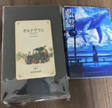

東京ビッグサイトで開催された文学フリマに行ってきた。
チェックしておいたブースの他に、現地で見かけて気になったブースにも寄ってみた。なんと3000以上のサークルが出店しており、来場者の数も多かった。ものを書く人の数の多さが可視化されていて、自分は一人じゃないんだと励まされた気分。購入した本を読むのが楽しみである。


2026.11.08
東京ビッグサイトで開催された文学フリマに行ってきた。
チェックしておいたブースの他に、現地で見かけて気になったブースにも寄ってみた。なんと3000以上のサークルが出店しており、来場者の数も多かった。ものを書く人の数の多さが可視化されていて、自分は一人じゃないんだと励まされた気分。購入した本を読むのが楽しみである。
